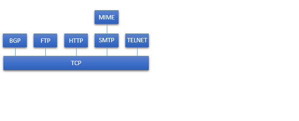

Conjunto de protocolos TCP/IP
En el material expuesto a continuación se explicará el conjunto de protocolos TCP/IP.
Los temas tratados serán:
- Introducción a TCP/IP
- Descripción de las capas de TCP/IP
- Descripción de los protocolos usados
- Funcionamiento del entorno TCP/IP
En algunas secciones se encuentran secuencias explicativas donde se debe avanzar (o retroceder) utilizando los botones correspondientes. Tambien es posible encontrarse con siglas o palabras con links que dirigen a un glosario con sus definiciones. Al abandonar una sección para dirigirse a otra, no se pierde el avance en las secuencias.
En la barra de la parte superior de la pantalla es posible dirigirse a los otros materiales disponibles haciendo click en la opción deseada.
TCP/IP
Entre las arquitecturas que han sido determinantes y fundamentales en el desarrollo de estándares de comunicación, junto al modelo de referencia OSI, está el conjunto de protocolos TCP/IP, siendo esta la arquitectura más utilizada.
TCP/IP es el resultado de la investigación y desarrollo de la red de conmutación de paquetes ARPANET, financiada por DARPA y se denomina como la familia de protocolos TCP/IP. Esta familia es una colección extensa de protocolos que corresponden a los estándares de lo que hoy conocemos como Internet.
El modelo TCP/IP estructura el problema de la comunicación en cinco capas relativamente independientes entre sí: capa física, capa de acceso a la red, capa internet, capa extremo-a-extremo o de transporte y capa de aplicación.
Comparación y equivalencia entre OSI y TCP/IP
Capa física

Esta capa define la interfaz física entre el dispositivo de transmisión de datos y el medio de transmisión o red. Se preocupa de la especificación de las características del medio de transmisión, de la naturaleza de las señales, tasas de datos y otros temas relacionados.
Capa de acceso a la red
Este nivel es el responsable del intercambio de datos entre el sistema final y la red a la que se conecta. El emisor, al suministrar la dirección del destino a la red, hace que esta encamine los datos hacia el destino apropiado. El nivel de red también se preocupa de proveer servicios requeridos por el emisor, como el manejo de prioridades.
El software a usar en este nivel será determinado según el tipo de red que se tenga. Se han desarrollado varios estándares para la conmutación de circuitos, la conmutación de paquetes (ej. frame relay) y para las redes de área local (ej. Ethernet). Algunos de los protocolos más usados son ARP y NDP.
Capa internet
En el caso de que los sistemas finales que intercambian datos se encuentren en distintas redes, la capa internet será la encargada del enrutamiento de los datos. Se necesitarán una serie de procedimientos que permitan que los datos atraviesen las distintas redes interconectadas.
El protocolo Internet (IP, Internet Protocol) es el encargado de ofrecer el servicio de enrutamiento. IP es implementado tanto en los sistemas finales, como en los enrutadores (routers) intermedios. Un router es un procesador que conecta dos redes y se encarga de retransmitir datos de una red a otra determinando la ruta que se debe seguir para alcanzar el destino.
Los protocolos IP más utilizados son IPv4 e IPv6.
Cabecera IPv4

Esta cabecera tiene 20 octetos, o 160 bits. Incluye direcciones fuente y destino de 32 bits. El campo de suma de comprobación se usa para detectar errores en la cabecera y así evitar un reparto errado. El campo Protocolo indica qué protocolo de nivel superior está usando IP. Los campos Identificación, Flags y Desplazamiento del fragmento se usan en el proceso de fragmentación y reensamblado. El campo Tiempo de vida indica cuánto tiempo se le permite a un datagrama permanecer en la red. IHL y Longitud total indican las longitudes de la cabecera como de todo el datagrama respectivamente. Versión la versión de IP, en este caso 4.
Cabecera IPv6

Esta cabecera consta de 40 octetos. El principal y más importante cambio en IPv6 es la extensión del campo de direcciones de origen y destino de 32 bits a 128 bits. El campo Etiqueta de flujo se utiliza para etiquetar paquetes que requieren tratamiento especial. Cabecera siguiente identifica el tipo de cabecera que sigue inmediatamente a la cabecera IPv6. Límite de saltos indice el número restante de saltos permitidos para el paquete.
Capa extremo-a-extremo o de transporte
La capa de transporte es un nivel común compartido por todas las aplicaciones donde su función es la de asegurar fiabilidad en el intercambio de datos, es decir, asegurar la llegada de los datos y la conservación del orden en el que fueron enviados. Los mecanismos para proporcionar esta fiabilidad son independientes de la naturaleza de las aplicaciones.
El protocolo para este control de la transmisión es TCP, el cual es orientado a conexión (se establece una conexión lógica previa a la transferencia), pero también existe el protocolo UDP que es no orientado a conexión (transferencia sin previo acuerdo) y por lo tanto no garantiza la entrega, la conservación del orden secuencial, ni la protección frente a duplicados.
Cabecera TCP

Posee una longitud mínima de 20 octetos. Sus campos de puertos de origen y destino son de 16 bits. Los campos de número de secuencia y confirmación se utilizan para asegurar la conservación del orden en los octetos de datos, así como también el campo de Ventana y de Puntero Urgente.
Cabecera UDP

Consta de 8 octetos. Cuenta con los campos básicos de puertos origen y destino, longitud del segmento UDP y una suma de comprobación opcional.
Capa de aplicación
Esta capa contiene toda la lógica para posibilitar las aplicaciones de usuario.
La capa de aplicación necesita un módulo separado bien definido para cada tipo particular de aplicación. Algunos ejemplos de protocolos de esta capa son SMTP, FTP y TELNET.
Interfaces de protocolo


La mayoría de las aplicaciones requieren un protocolo de transporte fiable y orientado a la conexión, por lo que utilizan TCP.
Funcionamiento de TCP e IP
En un entorno TCP/IP pueden haber múltiples aplicaciones y para diferenciarlas se ocupa la dirección denominada puerto.
Glosario
ARPANET (Advanced Research Projects Agency Network): Red de conmutación de paquetes creada por el Departamento de Defensa de los Estados Unidos.DARPA (Defense Advanced Research Projects Agency): Agencia de Proyectos de Investigación Avanzados de Defensa.
ARP (Address Resolution Protocol): Protocolo de resolución de direcciones.
NDP (Neighbor Discovery Protocol): Protocolo de descubrimiento de vecino.
TCP (Transmission Control Protocol): Protocolo de control de transmisión.
UDP (User Datagram Protocol): Protocolo de datagrama de usuario.
SMTP (Simple Mail Transfer Protocol): Protocolo simple de transferencia de correo electrónico.
FTP (File Transfer Protocol): Protocolo de transferencia de archivos.
TELNET (Telecommunication Network): Protocolo de red de telecomunicación.
SNMP (Simple Network Management Protocol): Protocolo simple de gestión de red.
ICMP (Internet Control Message Protocol): Protocolo de mensajes de control de Internet.
IGMP (Internet Group Management Protocol): Protocolo de gestión de grupos en Internet.
OSPF (Open Shortest Path First): Protocolo del primer camino más corto disponible.
RSVP (Resource Reservation Protocol): Protocolo de reserva de recursos.
Ethernet: Familia de tecnologías de redes de comunicación usada comúnmente en redes de área local (LAN), redes de área metropolitana (MAN) y redes de área amplia (WAN).
FDDI (Fiber Distributed Data Interface): Estándar para transmisión de datos en una red de área local (LAN) que hace uso de fibra óptica como su subyacente medio físico.